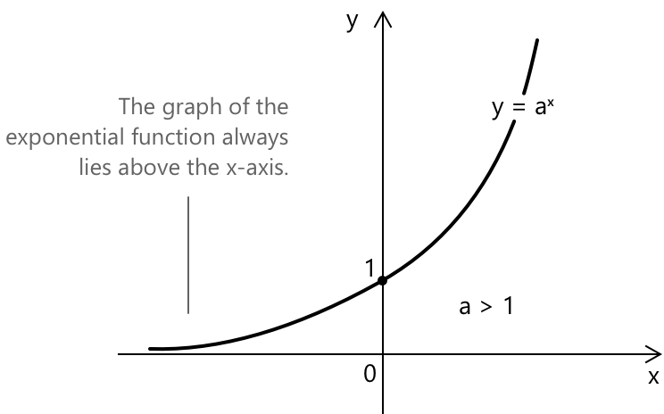
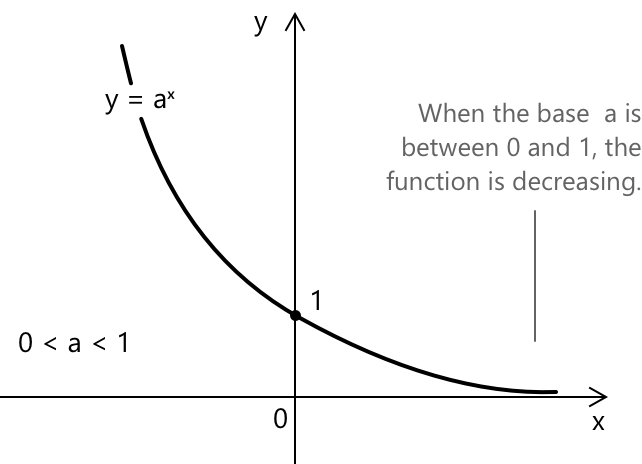
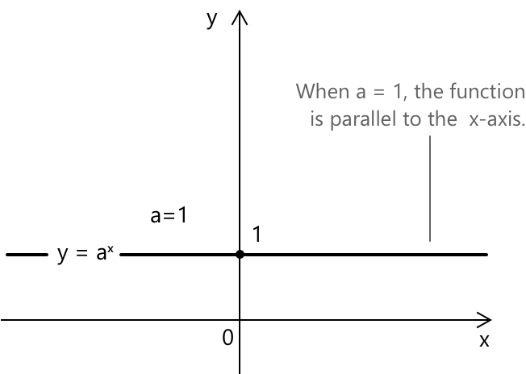

Показникова функція
Вступ
Показникова функція — це функція вигляду:
\[ f(x) = a^x, \quad a \in \mathbb{R}^+, \quad a \neq 1 \]
Загалом, для будь-якої основи \( a > 0 \), графік показникової функції \( y = a^x \) завжди перетинає вісь y у точці \( (0, 1) \), оскільки \( a^0 = 1 \). Він повністю лежить вище осі x, оскільки \( a^x > 0 \) для всіх \( x \in \mathbb{R} \), і ніколи не перетинає вісь x; іншими словами, \( a^x \neq 0 \) для будь-якого дійсного \( x \). Поведінка функції залежить від значення основи \(a\), і розрізняють три випадки.
Властивості для \(a > 1\)
Коли \( a > 1 \), показникова функція \( y = a^x \) є строго зростаючою на \( \mathbb{R} \).

- Область визначення: \( \mathbb{R} \).
- Область значень: \( \mathbb{R}^+ \).
- Монотонність: функція є строго зростаючою на \( \mathbb{R} \).
- Функція є бієктивною з \( \mathbb{R} \) у \( \mathbb{R}^+ \).
- Функція є неперервною та диференційовною на \( \mathbb{R} \).
- Функція не має точок максимуму або мінімуму.
- Границі при наближенні \( x \) до країв області визначення: \[ \begin{align} \lim_{x \to -\infty} a^x &= 0^+ \\[6pt] \lim_{x \to +\infty} a^x &= +\infty \end{align} \]
Коли \( a > 1 \), показникова функція необмежено зростає при \( x \to +\infty \) і наближається до нуля зверху при \( x \to -\infty \). Кожне збільшення \( x \) на одиницю множить значення функції на сталий коефіцієнт \( a \).
Властивості для \( 0 < a < 1 \)
Коли \( 0 < a < 1 \), показникова функція \( y = a^x \) є строго спадаючою на \( \mathbb{R} \).

- Область визначення: \( \mathbb{R} \).
- Область значень: \( \mathbb{R}^+ \).
- Монотонність: функція є строго спадаючою на \( \mathbb{R} \).
- Функція є бієктивною з \( \mathbb{R} \) у \( \mathbb{R}^+ \).
- Функція є неперервною та диференційовною на \( \mathbb{R} \).
- Функція не має точок максимуму або мінімуму.
- Границі при наближенні \( x \) до країв області визначення: \[ \begin{align} \lim_{x \to -\infty} a^x &= +\infty \\[6pt] \lim_{x \to +\infty} a^x &= 0^+ \end{align} \]
Коли \( 0 < a < 1 \), показникова функція необмежено зростає при \( x \to -\infty \) і наближається до нуля зверху при \( x \to +\infty \). Кожне збільшення \( x \) на одиницю множить значення функції на сталий коефіцієнт \( a \), який менший за одиницю.
Властивості для \( a = 1 \)
Коли \( a = 1 \), показникова функція зводиться до сталої функції \( y = 1^x = 1 \), що виключено зі стандартного означення. Її графіком є горизонтальна пряма на висоті \( y = 1 \).

- Область визначення: \( \mathbb{R} \).
- Область значень: \( \{1\} \).
- Монотонність: функція є сталою на \( \mathbb{R} \).
- Функція є неперервною та диференційовною на \( \mathbb{R} \).
Зв'язок із логарифмічною функцією
Показникова функція \( y = a^x \) є оберненою до логарифмічної функції \( y = \log_a(x) \), за умови що \( a > 0 \) та \( a \neq 1 \). Цей обернений зв'язок означає:
\[a^{\log_a(x)} = x \] \[ \quad \log_a(a^x) = x\]
Коли основа \( a \) дорівнює числу Ейлера \( e \approx 2.71828 \), функція відома як натуральна показникова функція:
\[ f(x) = e^x \]
Це єдина функція, яка в кожній точці дорівнює своїй похідній:
\[ \frac{d}{dx} e^x = e^x \]
Ця властивість робить \( e^x \) фундаментальним об'єктом у математичному аналізі та теорії диференціальних рівнянь. Та сама функція з'являється в означенні показникового розподілу, який моделює час очікування між подіями, що відбуваються з постійною інтенсивністю.
Узагальнені показникові функції
Виникають три випадки, коли основа або показник замінюються функцією від \( x \).
-
Якщо функція має вигляд \( y = [f(x)]^{g(x)} \), вона визначена в тих точках, де \( f(x) > 0 \) та \( g(x) \) визначена.
-
Якщо функція має вигляд \( y = a^{f(x)} \) при \( a > 0 \) та \( a \neq 1 \), вона визначена всюди, де визначена \( f(x) \).
-
Якщо функція має вигляд \( y = [f(x)]^a \), умова області визначення залежить від знака показника: функція визначена для \( f(x) \geq 0 \), коли \( a \in \mathbb{R}^+ \), і для \( f(x) > 0 \), коли \( a \in \mathbb{R}^- \).
Границя, похідна та інтеграл
Фундаментальна границя, пов'язана з натуральною показниковою функцією:
\[ \lim_{x \to 0} \frac{e^x – 1}{x} = 1 \]
Ця границя виражає той факт, що похідна \( e^x \) у початку координат дорівнює одиниці, що узгоджується з \( \frac{d}{dx} e^x = e^x \). Для загальної основи \( a > 0 \), \( a \neq 1 \), відповідна границя має вигляд:
\[ \lim_{x \to 0} \frac{a^x - 1}{x} = \ln(a) \]
Похідна показникової функції випливає безпосередньо з наведеної вище фундаментальної границі. Диференціювання \( a^x \) по \( x \) дає:
\[ \frac{d}{dx} a^x = a^x \ln(a) \]
\[ \frac{d}{dx} e^x = e^x \]
Інтеграл показникової функції отримують шляхом обернення наведених вище формул диференціювання:
\[ \int a^x \, dx = \frac{a^x}{\ln(a)} + c \]
\[ \int e^x \, dx = e^x + c \]
Асимптотичний ріст
Фундаментальною властивістю показникової функції є те, що вона зростає швидше за будь-який поліном або степеневу функцію, і повільніше за факторіал. Точніше, для будь-яких \( a > 1 \) та \( k > 0 \):
\[ \lim_{x \to +\infty} \frac{x^k}{a^x} = 0 \qquad \lim_{x \to +\infty} \frac{a^x}{x!} = 0 \]
Це встановлює наступну ієрархію швидкостей росту при \(x \to +\infty\):
\[ \log x \ll x^k \ll a^x \ll x! \]
Таблиця нижче ілюструє цю ієрархію для \( a = 2 \).
| \( x \) | \( \log_2 x \) | \( x^2 \) | \( 2^x \) | \( x! \) |
|---|---|---|---|---|
| 1 | 0 | 1 | 2 | 1 |
| 2 | 1 | 4 | 4 | 2 |
| 4 | 2 | 16 | 16 | 24 |
| 8 | 3 | 64 | 256 | 40,320 |
| 16 | 4 | 256 | 65,536 | 2.09 × 10¹³ |
| 32 | 5 | 1024 | 4.29 × 10⁹ | 2.63 × 10³⁵ |
Ієрархія \( \log x \ll x^k \ll a^x \ll x! \) є центральним результатом в асимптотичному аналізі та зустрічається в усьому комп'ютерному науці, де вона лежить в основі класифікації складності алгоритмів з точки зору вимог до часу та пам'яті.
Гіперболічні функції, похідні від експоненціальної функції
Експоненціальна функція забезпечує природну основу для означення гіперболічних функцій, які зустрічаються в багатьох областях аналізу та геометрії. Три фундаментальними з них є гіперболічний синус і косинус та гіперболічний тангенс, що визначаються наступним чином:
\[ \cosh(x) = \frac{e^{x} + e^{-x}}{2} \quad x \in \mathbb{R} \]
\[ \sinh(x) = \frac{e^{x} – e^{-x}}{2} \quad x \in \mathbb{R} \]
\[ \tanh(x) = \frac{\sinh(x)}{\cosh(x)} \quad x \in \mathbb{R} \quad \tanh(x) \in (-1, 1) \]
Оскільки вони визначені через експоненціальну функцію, гіперболічні функції є гладкими та диференційовними на \( \mathbb{R} \). Зауважимо, що \( \tanh(x) \) є обмеженою, на відміну від \( \sinh(x) \) та \( \cosh(x) \), які необмежено зростають при \( x \to \pm\infty \).